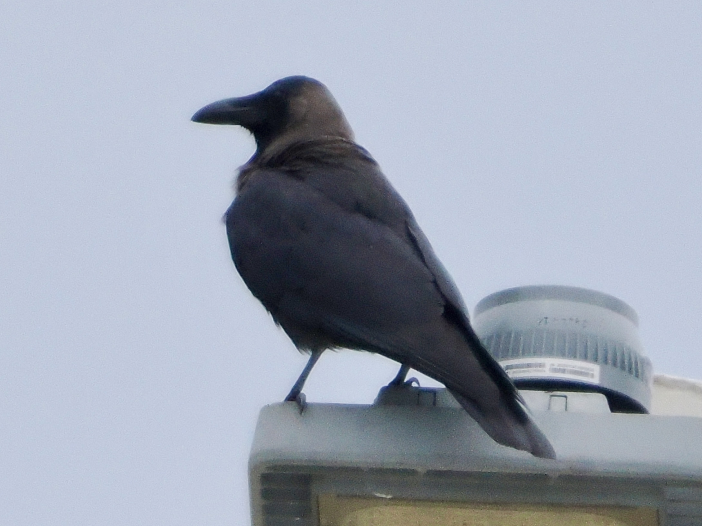

House Crow
Corvus splendens
Order: Passeriformes
Family: Corvidae

A black crow with a grey neck. Native to the Indian subcontinent, but has somehow made its way to other parts of the world. Some suspect it has arrived in HK via cargo ships. The government has made some efforts to control the population. Now most House Crows are only found in Sham Shui Po and Kowloon City.